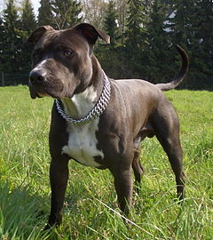

Американський стафордшир-тер'єр
Американський стафордшир-тер'єр (англ., ісп., нім., фр. American Staffordshire Terrier - єдина уніфікована
назва багатьма мовами) — порода собак середнього зросту, ранні предки якої походять з Англії, належить до групи
тер'єрів. Порода отримала розповсюдження на початку ХХ сторіччя, та згодом була визнана
Американським клубом собаківництва. Собаки даної породи універсальні. В наш час найчастіше
використовуються як домашні компанійські собаки, собаки-сторожі, собаки на службі в поліції,
собаки-пастухи, та в інших цілях. Розповсюджені також неофіційні назви породи:
стаф; амстаф; амстафорд, та інші.
ЗМІСТ
- Історія породи
- Поведінка та характер
- Стандарт породи
- Посилання
Історія породи
Хоча ранні предки даної породи походять з Англії, історія розвитку американського стафордшир-тер'єра
пов'язана з Америкою. Собаки даної породи використовувались як пастухи, охоронці домогосподарств,
та як собаки-компаньйони. Деякі ранні предки породи також виводилися для спортивних собачих боїв.
До початку XIX сторіччя бульдоги виводилися в Англії з ціллю цькування биків. Малюнки бульдога, написані в 1870-му
році представляють собаку більш схожу на сьогоденного американського стафордшир-тер'єра, ніж на сучасного бульдога.
Прообразами породи вважаються наступні три породи: фокс-тер'єр, англійський білий тер'єр та чорний з підпалинами
тер'єр. В будь-якому випадку, мало місце схрещування бульдога з тер'єром, результатом якого став
стаффордшир-тер'єр. До Америки дані собаки були завезені в 1870-му році, де стали відомі під назвами
піт-дог, піт бул тер'єр, американський бул тер'єр, та янкі-тер'єр.
Поведінка та характер
Американський стафордшир-тер'єр — динамічний, відважний та енергічний звір, тому має значну потребу в русі.
Це дуже сильний собака, підпорядкувати якого собі хазяїн повинен ще з дитинства. Амстаф схильний до бійки,
тому його необхідно вчити дружньому поводженню з іншими собаками ще з раннього віку. На думку спеціалістів,
власник амстафа повинен володіти певними професійними знаннями, щоб контролювати собаку та не допускати
агресію з його боку.
Суспільна думка щодо цих собак має протирічний характер: власники цих собак виділяють їх дружній харакер,
відданість хазяїну та високий поріг дратівливості (холоднокровність), тоді як критики звертають увагу на
генетичну схильність цих собак до бійок та агресивність частини її представників, що направлена в основному
на інших собак. Факти агресії породи до людей, що часто обговорюються в ЗМІ, зумовлюються дефектами розведення
та виховання собак.
Важливою рисою характеру даного собаки, на яку звертають увагу власники, є її грайливість, готовність виконати
будь-яку дану хазяїном команду. Сміливість амстафа легендарна.
Стандарт породи



Зовнішній вигляд
Американський стафордшир-тер'єр має справляти враження собаки великої для своїх розмірів сили, м'язистої, але в той же час елегантної, моторної, та дуже живо реагуючої на оточуюче. Американський стафордшир-тер'єр в своїх обрисах повинен бути кремезним, не довгоногим чи хортоподібним.
- Голова. Середньої довжини, глибока, широка, з чітко вираженими м'язами та виразним переходом від лоба до морди.
- Вуха посаджені високо.
- Очі темні, округлі, глибоко посаджені та широко розставлені. Рожеві віки недопустимі.
- Морда середньої довжини з чітким переходом до черепної частини. Спинка носа заокруглена.
- Щелепи чітко окреслені. Міцна нижня щелепа забезпечує потужність захвату.
- Губи щільні, такі, що прилягають, не відвислі.
- Ніс обов'язково чорний.
Корпус.
- Груди широкі та глибокі на всій протяжності з достатньо випуклими, щільно збитими ребрами.Живіт дещо підтягнутий.
- Передні кінцівки широко розставлені, що зумовлює розвинені груди.
- Хвіст — короткий порівняно з розмірами собаки. Низько посаджений, звужується до кінця. Не гачкуватий, не закинутий за спину.
- Кінцівки. Передні кінцівки досить прямі з потужними, округлими кістками. Задні кінцівки дуже м'язисті.
- Забарвлення. Допускається будь-яке — однокольорове, частково плямисте. Чисто біле забарвлення, або біле, що перевищує 80% тіла собаки, є пороком.
- Зріст та вага. Обов'язково пропорційні. Висота в холці — приблизно 46-48 см для псів, та 44-46 см для сук.
Посилання
Американський стаффордширський тер'єр
Амстафф